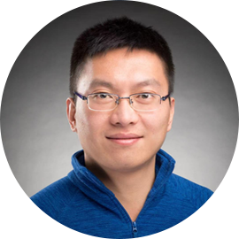

Dr. Zhexin Zhu
Research Focus: Epigenetic regulation of stem cells and aging-related diseases
Awards & Projects: 2023 National Outstanding Young Talent Program; Shanghai Leading Talent; 2024 National Major Science and Technology Project on Four Major Chronic Diseases (Project Leader)
Professional Service: Reviewer for national science and technology awards and National Health Commission projects; peer reviewer for Nature, Nature Communications, Cell Death & Disease, Genome Research, Stem Cell Research & Therapy, and Cell Discovery.
RESEARCH EXPERIENCE
-
Postdoctoral Fellow – St. Jude Children’s Research Hospital
2017.11 – 2023.05, Memphis, TN, USA -
Postdoctoral Fellow – Wellcome Trust Sanger Institute
2016.12 – 2017.11, Cambridge, UK -
Ph.D. and M.S. Student – Institute for Health Sciences, University of Chinese Academy of Sciences
2008.09 – 2016.06, Shanghai, China -
B.Sc. in Biological Sciences – Ocean University of China
2004.09 – 2008.06, Qingdao, China